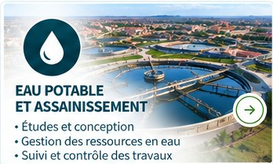
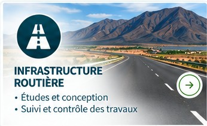
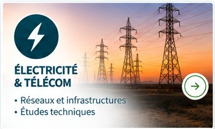
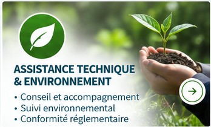
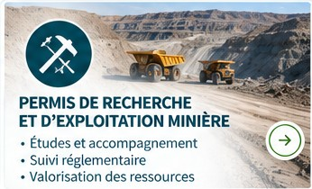

Bâtiment & structures
- Conception et études de bâtiments
- Béton armé, charpente métallique / bois, structures mixtes
- Lots techniques et sécurité incendie
- Études thermiques et efficacité énergétique
- Métrés, suivi, assistance technique et expertise
Nos services
ROCSOL INGENIERIE vous accompagne à chaque étape avec des solutions techniques, innovantes et durables adaptées aux besoins des territoires.
Nos domaines d’intervention





